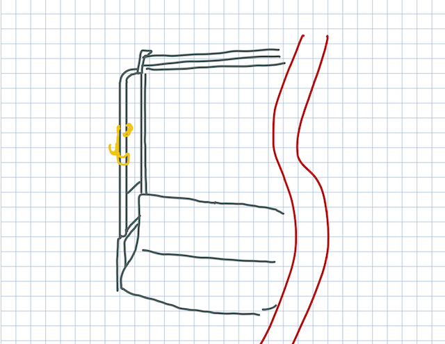

私の祖父や祖母を含め多くの高齢者が自動車免許の返納を行い、移動手段が電車・バスに限られている。そのため、
以前より食品や生活品のまとめ買いが困難になっているという話を聞いた。少しでも高齢者の方の
買い物を手助けできるよう
電車・バスのポールにつけられる簡易的な荷物掛けを製作する。
取り外しがしやすく携帯性に富んだものを作る。dgfcovcbvkawdvcadbcvuawdbclwiadckavljbwuvcouwrbcvor
